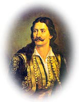

| Διάκος Αθανάσιος (1788-1821)  Ο θρυλικός ήρωας γεννήθηκε στη Μουσουνίτσα της Παρνασσίδος το 1788 και συγκλόνισε το πανελλήνιο όχι μόνο με τον ηρωισμό αλλά και με τον τραγικό του θάνατο. Παιδί ακόμα μπήκε στο μοναστήρι του Αγίου Ιωάννη του Προδρόμου της Αρτοτίνας, όπου έμαθε τα πρώτα του γράμματα. Σε ηλικία 20 χρονών άφησε τη ζωή του μοναστηριού και πήρε τα όπλα εναντίον των Τούρκων. Ο Διάκος λέγεται ότι ήταν άφταστος στα αγωνίσματα, στα όπλα και στην ανδρεία. Κάποια χρόνια πριν την Επανάσταση υπηρέτησε στο σώμα των «Τσοχανταρέων» (σωματοφυλάκων) του Αλή Πασά. Στα 1818 έγινε το πρώτο από τα επτά παλικάρια του Οδυσσέα Ανδρούτσου και μυήθηκε στην Φιλική Εταιρεία. Μετά το 1820 εκλέχθηκε αρχηγός στο αρματολίκι της Ρούμελης, στη θέση του καταδιωκόμενου Ανδρούτσου. Είχε αναλάβει την αρχηγία των όπλων της Λιβαδειάς και προετοίμασε την εξέγερση. Στη γέφυρα της Αλαμάνας στις 22 Απριλίου 1821 προσπάθησε να ανακόψει την πορεία του Ομέρ Βρυώνη και του Κιοσέ Μεχμέτ προς την Πελοπόννησο. Συνελήφθη μετά από ηρωική μάχη και θανατώθηκε με ανασκολοπισμό (τον σούβλισαν). Αναλυτική βιογραφία του αγωνιστή στο Διαδίκτυο |
||